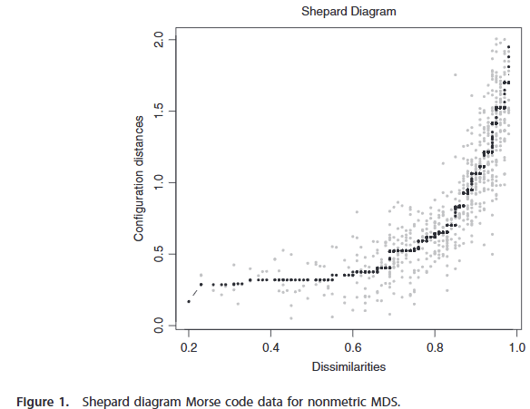
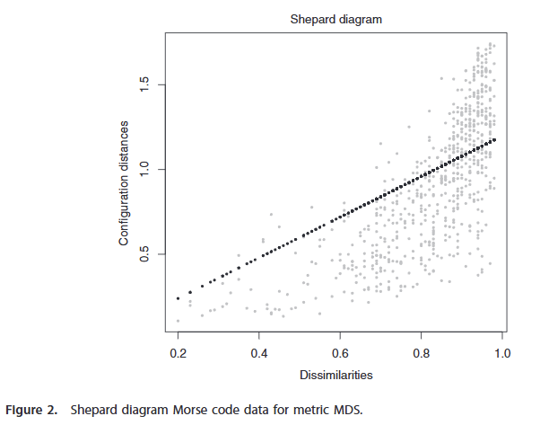
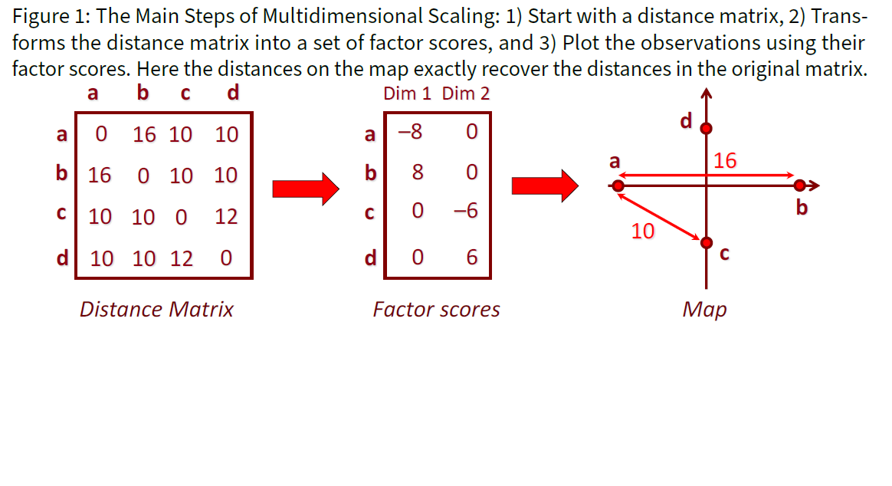
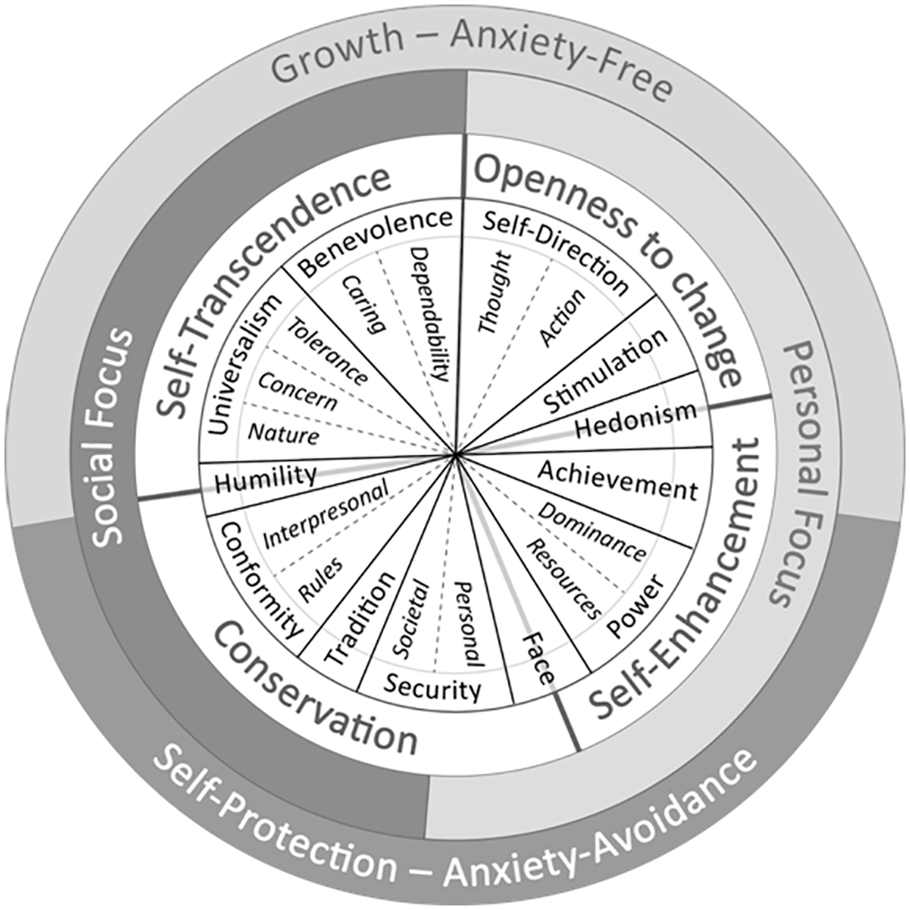
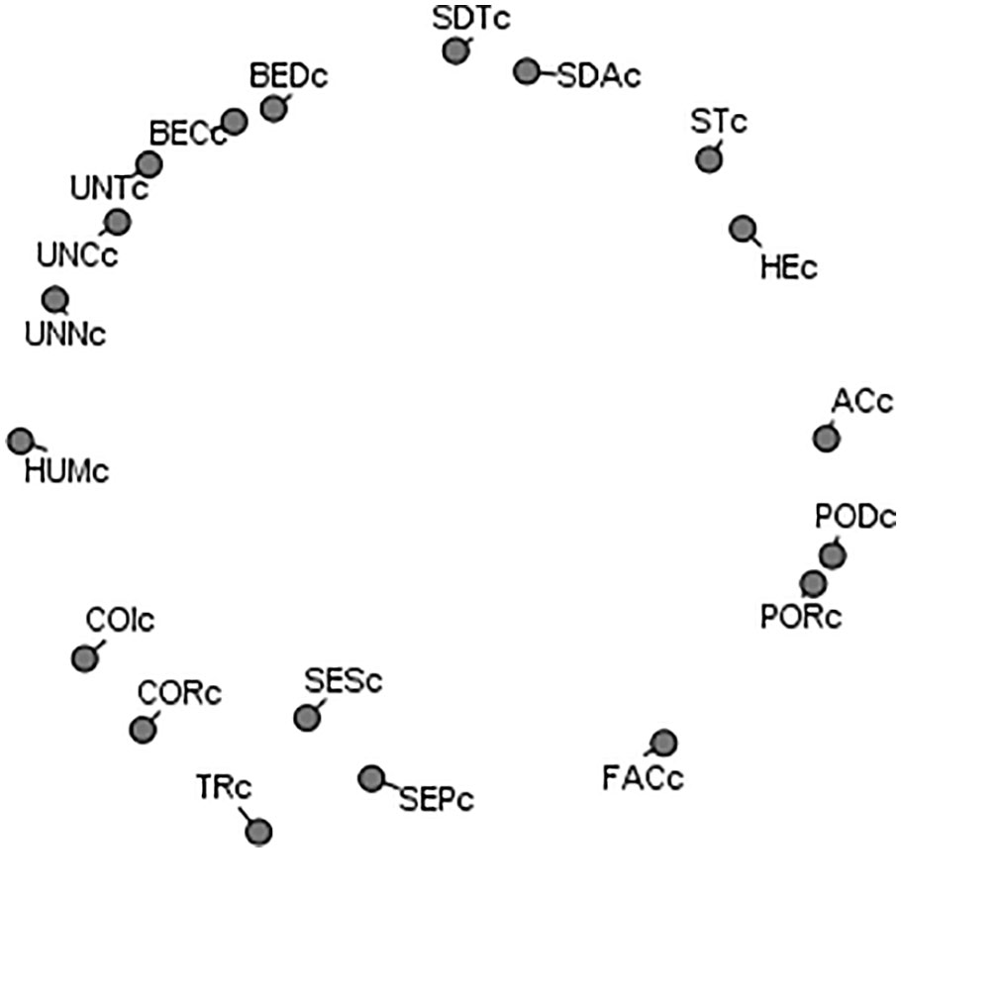
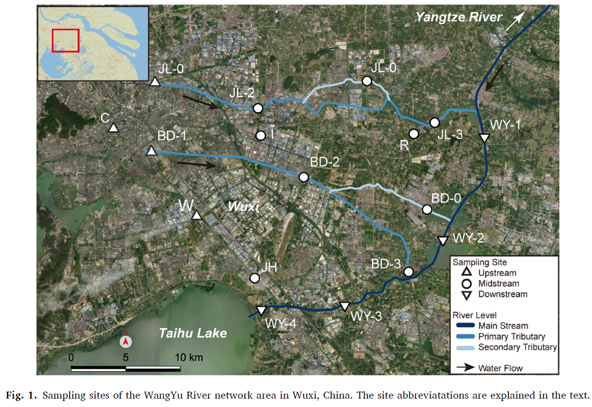
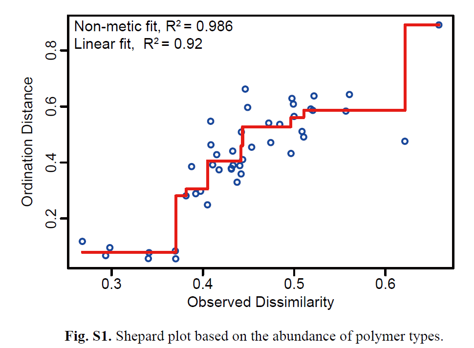
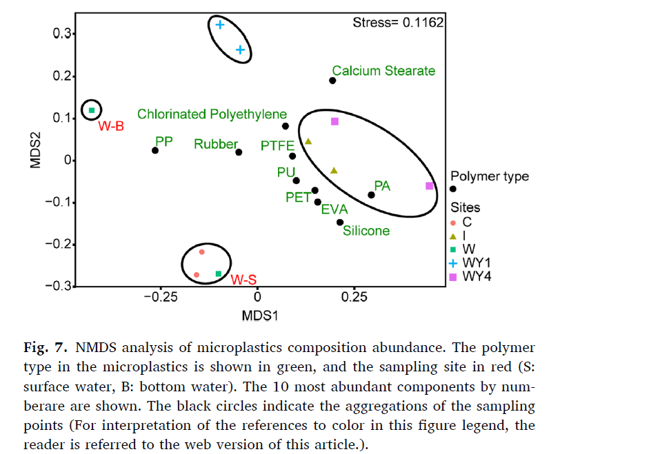
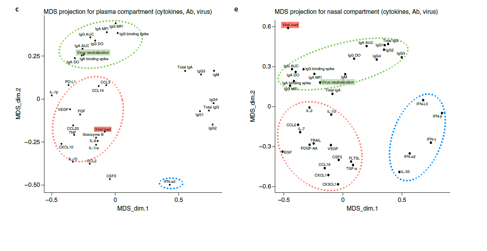
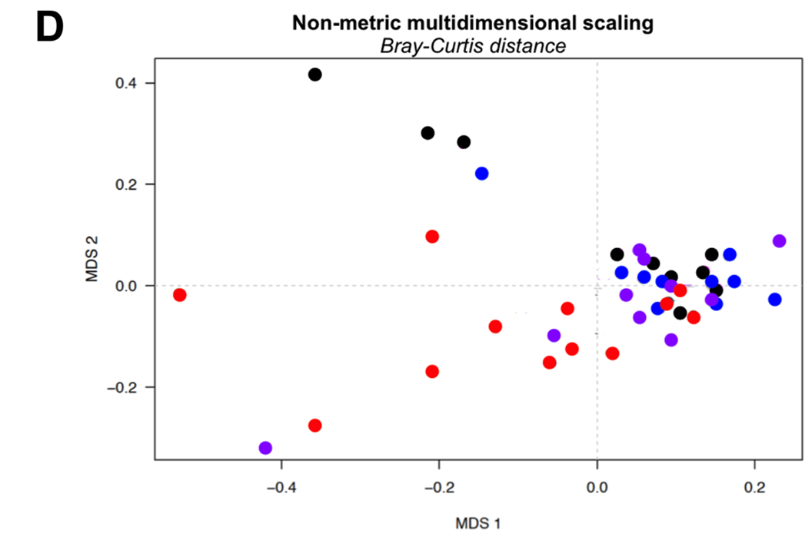

📝 Introdução
O que é Escalonamento Multidimensional?
Partimos de uma ideia intuitiva
- Coca-Cola vs Pepsi
- Coca-Cola vs Guaraná
- Pepsi vs Guaraná
Para que serve?
Onde é utilizado?
Onde é utilizado?
Onde é utilizado?
Algumas aplicações
Algumas aplicações: Mapa de Percepção
- eixo x = preço;
- eixo y = qualidade
Avaliação de tecnologias emergentes
O Quadrante Mágico: Um falso amigo
Por que o Quadrante Mágico da Gartner NÃO é MDS?
Apesar da aparência visual semelhante, os fundamentos metodológicos são diferentes.
| Aspecto | Quadrante Mágico da Gartner | Escalonamento Multidimensional (MDS) |
|---|---|---|
| Objetivo | Classificar fornecedores segundo critérios definidos pela Gartner. | Descobrir padrões de similaridade entre objetos a partir dos dados. |
| Origem dos eixos | Eixos previamente definidos: Capacidade de Execução e Completude da Visão. | Eixos emergem matematicamente dos dados. |
| Método | Avaliação baseada em critérios e julgamento de especialistas. | Técnica estatística baseada em distâncias ou similaridades. |
| Posição dos pontos | Definida pelas pontuações atribuídas pela Gartner. | Calculada por algoritmos para preservar relações entre objetos. |
| Interpretação dos eixos | Conhecida antes da análise. | Interpretada somente após a análise. |
| Papel dos especialistas | Alto. | Baixo, predominando os dados. |
| Representação gráfica | Quatro quadrantes pré-definidos. | Espaço contínuo sem divisões impostas. |
| Finalidade | Apoiar decisões de mercado e seleção de fornecedores. | Explorar estruturas latentes e relações perceptuais. |
📖Desenvolvimento histórico
Fase preliminar: As Raízes Matemáticas da MDS (1936-1938)
Marco histórico
- Matriz de relações;
- Representação geométrica
Fase 1: O Nascimento da Classical MDS (1952)
- comparar estímulos perceptuais;
- analisar similaridade entre profissões;
- estudar relações entre conceitos psicológicos;
- interpretar grandes matrizes de distâncias.
Fase 2: A Revolução Psicológica (1962-1964)
- "A é mais parecido com B do que com C";
- "O estímulo X se parece mais com Y do que com Z";
- "A marca A é percebida como mais próxima da marca B do que da marca C".
Marco histórico
- Substituição das distâncias exatas por relações ordinais;
- Representação de julgamentos subjetivos;
- Adequação da MDS para pesquisas em psicologia e ciências sociais;
- Maior robustez para dados perceptuais.
Antes:
A ↔ C = 8,4
Essa mudança transformou a MDS de uma ferramenta predominantemente geométrica em uma metodologia de investigação da percepção humana, tornando-se amplamente utilizada em psicologia cognitiva, comportamento do consumidor, marketing e sociologia.
Fase 3: O Problema da Qualidade da Representação (1964-1965)
- O mapa de duas dimensões é suficiente?
- Uma solução em três dimensões é melhor?
- Quanto da informação original foi preservada?
- Como comparar soluções diferentes?
Marco histórico
- Criação da principal métrica de ajuste da MDS;
- Comparação objetiva entre modelos concorrentes;
- Definição de critérios para escolha da dimensionalidade;
- Formalização do conceito de qualidade da representação.
Stress alto = representação inadequada
A introdução do Stress transformou a MDS de uma técnica de visualização em um verdadeiro modelo quantitativo passível de validação científica.


Fase 4: Diferenças Individuais e o Modelo INDSCAL (1970-1972)
- Consumidores valorizando atributos diferentes de um produto;
- Pessoas interpretando estímulos visuais de maneira distinta;
- Diferenças culturais afetando julgamentos de similaridade.
A necessidade de incorporar essas diferenças individuais levou ao desenvolvimento de modelos mais sofisticados de MDS.
A figura acima ilustra como duas pessoas podem perceber a mesma configuração de objetos de maneira diferente, resultando em representações espaciais distintas.
Marco histórico
- Representação simultânea de múltiplos indivíduos;
- Modelagem das variações perceptuais;
- Introdução de pesos dimensionais individuais;
- Ampliação das aplicações em marketing e ciências comportamentais.
+
Importâncias Individuais
O INDSCAL inaugurou uma nova linha de pesquisa focada na análise de diferenças individuais dentro da estrutura da MDS.
Fase 5: A Expansão Computacional (1970-1985)
- dados assimétricos;
- preferências individuais;
- julgamentos condicionais;
- grandes matrizes de proximidade.
Marco histórico
- ALSCAL;
- Weighted MDS;
- Modelos de unfolding;
- MDS por máxima verossimilhança;
- Modelos para dados complexos.
Este período é frequentemente considerado a "era de ouro" da MDS psicométrica.
Fase 6: Da Exploração ao Teste de Hipóteses (1980-1995)
- A teoria proposta é compatível com os dados?
- A configuração deve obedecer determinada estrutura?
- É possível restringir o espaço perceptual?
Marco histórico
- Introdução da abordagem confirmatória;
- Teste formal de teorias cognitivas;
- Validação de modelos psicológicos;
- Maior rigor inferencial.
Essa mudança aproximou a MDS dos métodos estatísticos voltados à inferência científica.
Fase 7: O Desafio Não Linear (1998-2005)
- imagens digitais;
- formas geométricas;
- dados biológicos;
- estruturas de alta dimensionalidade.
Marco histórico
- Preservação de estruturas não lineares;
- Uso de distâncias geodésicas;
- Integração da MDS com Machine Learning;
- Base para técnicas modernas de redução dimensional.
Esta fase marcou a aproximação definitiva entre a MDS e a moderna ciência de dados.
Fase 8: A Era da Ciência de Dados (2005-Presente)
- bioinformática;
- genômica;
- redes sociais;
- sistemas de recomendação;
- internet das coisas;
- inteligência artificial.
Marco histórico
- Visualização de dados de alta dimensionalidade;
- Análise exploratória em Machine Learning;
- Integração com algoritmos de inteligência artificial;
- Aplicação em redes, sensores e biologia computacional.
A trajetória iniciada com a reconstrução geométrica de matrizes de proximidade evoluiu para um conjunto de ferramentas fundamentais para análise de dados complexos no século XXI.
Resumo da Evolução Histórica da Multidimensional Scaling (MDS)
| Fase | Período | Pesquisadores | Pergunta Principal | Principal Contribuição |
|---|---|---|---|---|
| Fase Preliminar | 1936-1938 | Eckart & Young | É possível reconstruir um espaço a partir de relações entre objetos? | Fundamentos matemáticos da aproximação matricial e redução dimensional. |
| Fase 1 | 1952 | Torgerson | Como transformar matrizes de distâncias em mapas espaciais? | Criação da Classical Multidimensional Scaling (CMDS). |
| Fase 2 | 1962-1964 | Shepard & Kruskal | Como representar similaridades subjetivas sem exigir distâncias exatas? | Desenvolvimento da Non-Metric MDS (NMDS). |
| Fase 3 | 1964-1965 | Kruskal | Como avaliar a qualidade da representação espacial? | Introdução da medida de ajuste Stress. |
| Fase 4 | 1970-1972 | Carroll & Chang | Como modelar diferenças individuais de percepção? | Criação do modelo INDSCAL. |
| Fase 5 | 1970-1985 | Young, Takane, De Leeuw e colaboradores | Como ampliar a MDS para problemas mais complexos? | ALSCAL, WMDS, Unfolding e modelos probabilísticos. |
| Fase 6 | 1980-1995 | Diversos pesquisadores | Como utilizar MDS para testar hipóteses teóricas? | Constrained MDS e Confirmatory MDS. |
| Fase 7 | 1998-2005 | Tenenbaum, De Silva e outros | Como representar estruturas não lineares? | Isomap, GMDS e métodos baseados em geodésicas. |
| Fase 8 | 2005-Presente | Comunidade de Machine Learning e Data Science | Como explorar dados massivos e alta dimensionalidade? | Integração da MDS com IA, análise de redes e ciência de dados. |
🟰Desenvolvimento algébrico
Medidas de Similaridade e Dissimilaridade
Definição Formal de Distância
Distância Euclidiana
Distância Manhattan (City Block)
Distância de Minkowski
Casos Particulares da Métrica de Minkowski
| Valor de q | Resultado |
|---|---|
| \(q=1\) | Distância Manhattan |
| \(q=2\) | Distância Euclidiana |
| \(q\rightarrow\infty\) | Distância de Chebyshev |
Euclidiana ⊂ Minkowski
Chebyshev ⊂ Minkowski
Por que a Distância Euclidiana é Especial para a MDS Clássica?
Comparação entre as Distâncias Euclidiana, Manhattan e Minkowski
| Métrica | Fórmula | Interpretação | Aplicações |
|---|---|---|---|
| Euclidiana | \( d_E(\mathbf{x}_i,\mathbf{x}_j)= \sqrt{ \sum_{k=1}^{p} (x_{ik}-x_{jk})^2} \) | Distância em linha reta. | PCA, CMDS, geometria Euclidiana. |
| Manhattan | \( d_M(\mathbf{x}_i,\mathbf{x}_j)= \sum_{k=1}^{p} |x_{ik}-x_{jk}| \) | Soma dos deslocamentos por eixo. | Dados esparsos, logística e otimização. |
| Minkowski | \( d_q(\mathbf{x}_i,\mathbf{x}_j) = \left( \sum_{k=1}^{p} w_k |x_{ik}-x_{jk}|^q \right)^{1/q} \) | Generalização das métricas anteriores. | Machine Learning e métricas customizadas. |
Exemplo: Distância Euclidiana
Exemplo: Distância Manhattan
Exemplo: Distância de Minkowski
Resumo dos Resultados
| Métrica | Valor Obtido |
|---|---|
| Euclidiana | 8,49 |
| Manhattan | 12,00 |
| Minkowski (\(q=3\)) | 7,56 |
Por que a Distância Euclidiana é Utilizada na CMDS?
Exemplo Numérico: Capitais da Região Sudeste do Brasil
Exemplo Utilizado ao Longo do Texto
Distância Euclidiana
Distância Manhattan (City Block)
Distância de Minkowski
Comparação das Métricas
| Métrica | Expressão Matemática | Resultado | Interpretação |
|---|---|---|---|
| Euclidiana | \[ d_E = \sqrt{ \sum (x_i-x_j)^2 } \] | 357.00 km | Menor caminho em linha reta. |
| Manhattan | \[ d_M = \sum |x_i-x_j| \] | 493.50 km | Soma dos deslocamentos em cada eixo. |
| Minkowski (\(q=3\)) | \[ d_q = \left( \sum |x_i-x_j|^q \right)^{1/q} \] | 324.76 km | Generalização das métricas anteriores. |
Por que a Distância Euclidiana é Fundamental para a CMDS?
Seriamos aprovados no ensino médio?
Talvez pensando nas distâncias euclidianas fique fácil

🐍Aplicação prática (Python)
Escalonamento Multidimensional: do código à demonstração
Pipeline de desenvolvimento dos três notebooks, bibliotecas e demonstração algébrica do ESM clássico.
1. Visão geral dos notebooks
| Notebook | Dados | Entrada do ESM | Ideia principal |
|---|---|---|---|
01-MDS_Distancias.ipynb | atlas_dist.csv (18 cidades) |
Matriz de distâncias já pronta (km) | Recuperar posições a partir de distâncias; distâncias não euclidianas (autovalores negativos) |
02-MDS-banco_mundial_2019.ipynb | bancomundial_2019.csv (155 países × 8 indicadores) |
Distâncias euclidianas sobre variáveis padronizadas | ESM × ACP; grupos por nível de renda |
03-MDS-oms_2019.ipynb | oms_2019.csv (182 países × 7 indicadores) |
Idem | ESM × ACP; grupos por região da OMS |
2. Pipeline de desenvolvimento
Mesma sequência nos três notebooks; só muda a origem da matriz de distâncias \(D\).
Fase 1 · Dados e preparação
Dados brutos
CSV local ou API (Banco Mundial, OMS). Distância: atlas_dist.csv, só o triângulo inferior.
pandas · urllib · json
Limpeza
Casos completos (dropna). Distância: simetrizar a matriz (somar a transposta) e zerar a diagonal.
pandas · numpy
Transformação
Logaritmo das variáveis assimétricas (PIB per capita, mortalidades, suicídio com log1p).
numpy · scipy.stats
Padronização
\(Z = (X-\bar{x})/s\). Equivale a usar a matriz de correlações.
pandas
Fase 2 · Escalonamento multidimensional clássico
Matriz \(D\)
Dada (Ex. 3) ou distância euclidiana entre as linhas de \(Z\).
numpy
Dupla centralização
\(B=-\tfrac12 H D^{*} H\), com \(D^{*}=[\delta_{ij}^2]\) e \(H=I-\tfrac1n\ones\ones^\top\).
numpy
Decomposição espectral
\(B=Q\Lambda Q^\top\) com np.linalg.eigh, em ordem decrescente.
numpy.linalg
Coordenadas
\(Y=Q_q\Lambda_q^{1/2}\), com \(q=2\) ou \(3\).
numpy
Fase 3 · Avaliação e interpretação
Distorção
distor (> 0,70), stress de Kruskal, autovalores (negativos: não euclidiana).
numpy
Gráficos
2D e 3D, cores por grupo, distâncias originais × reconstruídas.
matplotlib
Interpretação
Proximidade entre pontos, grupos, comparação ESM × ACP.
—
distor do ESM = PVEA da ACP, e as coordenadas coincidem com os escores da ACP, a menos do sinal (demonstrado na seção 4.9).3. Bibliotecas e ambiente
| Biblioteca | Uso nos notebooks | Notebooks |
|---|---|---|
numpy | Álgebra matricial: \(H\), \(B\), np.linalg.eigh, distâncias | Todos |
pandas | Leitura do CSV, tabelas, estatísticas, grupos | Todos |
matplotlib | Gráficos 2D e 3D (dispersão, barras, boxplot, histograma) | Todos |
scipy.stats | Assimetria, curtose, QQ-plots (probplot) | Banco Mundial, OMS |
itertools (padrão) | combinations: teste da desigualdade triangular | Distâncias |
os, json, urllib (padrão) | Verificar arquivo local e consultar as APIs | Banco Mundial, OMS |
google.colab.files | Enviar o CSV ao Colab (só se o arquivo não existir) | Todos |
pip install numpy pandas matplotlib scipyscikit-learn? O ESM clássico é implementado diretamente com numpy e scipy, enquanto sklearn.manifold.MDS usa outro algoritmo (SMACOF, minimização de stress) e não reproduziria os números do PDF.4. Demonstração algébrica do ESM clássico
Objetivo: a partir apenas de \(D=[\delta_{ij}]\), obter coordenadas \(Y_1,\dots,Y_n\in\mathbb{R}^q\) cujas distâncias aproximem \(\delta_{ij}\).
4.1 Hipóteses e ponto de partida
Sejam \(x_1,\dots,x_n\in\mathbb{R}^p\) as observações, com colunas centradas: \(\sum_{i=1}^{n}x_{ik}=0\) para todo \(k\). A distância euclidiana é \(\delta_{ij}=\lVert x_i-x_j\rVert=\bigl(\sum_{k=1}^{p}(x_{ik}-x_{jk})^2\bigr)^{1/2}\). Expandindo o quadrado,
\[ \delta_{ij}^2=\lVert x_i\rVert^2+\lVert x_j\rVert^2-2\,x_i^\top x_j . \]Defina \(b_{ij}=x_i^\top x_j\), isto é, \(B=XX^\top\) (matriz \(n\times n\) de produtos internos). Então
\[ \delta_{ij}^2=b_{ii}+b_{jj}-2\,b_{ij}. \tag*{(1)} \]4.2 As linhas (e colunas) de \(B\) somam zero
Como \(B\) é simétrica, também \(\sum_{j}b_{ij}=0\). É aqui que a centralização das colunas é usada.
4.3 Somando a equação (1)
Seja \(T=\tr(B)=\sum_{i}b_{ii}\). Somando (1) em \(i\), e usando (2),
\[ \sum_{i=1}^{n}\delta_{ij}^2=\underbrace{\sum_i b_{ii}}_{T}+n\,b_{jj}-2\underbrace{\sum_i b_{ij}}_{0}=T+n\,b_{jj}. \]Analogamente, somando em \(j\), e depois nos dois índices:
\[ \sum_{j=1}^{n}\delta_{ij}^2=T+n\,b_{ii},\qquad \sum_{i=1}^{n}\sum_{j=1}^{n}\delta_{ij}^2=2nT. \tag*{(3)} \]4.4 Isolando \(b_{ii}\) e \(b_{jj}\)
Defina as médias \(\delta_{i\cdot}^2=n^{-1}\sum_{j}\delta_{ij}^2\), \(\delta_{\cdot j}^2=n^{-1}\sum_{i}\delta_{ij}^2\) e \(\delta_{\cdot\cdot}^2=n^{-2}\sum_{i}\sum_{j}\delta_{ij}^2\). De (3): \(T=\tfrac{n}{2}\,\delta_{\cdot\cdot}^2\), e portanto \(T/n=\tfrac12\delta_{\cdot\cdot}^2\). Logo
\[ b_{ii}=\delta_{i\cdot}^2-\tfrac12\delta_{\cdot\cdot}^2,\qquad b_{jj}=\delta_{\cdot j}^2-\tfrac12\delta_{\cdot\cdot}^2 . \]4.5 Obtendo \(b_{ij}\) apenas em função das distâncias
De (1), \(2b_{ij}=b_{ii}+b_{jj}-\delta_{ij}^2\). Substituindo o resultado de 4.4:
\[ b_{ij}=-\frac12\Bigl(\delta_{ij}^2-\delta_{i\cdot}^2-\delta_{\cdot j}^2+\delta_{\cdot\cdot}^2\Bigr). \tag*{(4)} \]Ou seja, a partir de \(D\) é possível encontrar \(B=XX^\top\) sem conhecer \(X\).
4.6 Forma matricial: a dupla centralização
Seja \(D^{*}\) a matriz com entradas \(\delta_{ij}^2\) e \(H=I-\tfrac1n\ones\ones^\top\) (a matriz de centralização, simétrica e idempotente). Multiplicar \(D^{*}\) por \(H\) à esquerda subtrai de cada elemento a média de sua coluna (\(\delta_{\cdot j}^2\)); à direita, a média de sua linha (\(\delta_{i\cdot}^2\)). O termo \(\delta_{\cdot\cdot}^2\) reaparece porque a média geral foi subtraída duas vezes. Assim, a entrada \((i,j)\) de \(HD^{*}H\) é \(\delta_{ij}^2-\delta_{i\cdot}^2-\delta_{\cdot j}^2+\delta_{\cdot\cdot}^2\), e (4) equivale a
\[ B=-\frac12\,H\,D^{*}\,H,\qquad H=I-\frac1n\ones\ones^\top . \tag*{(5)} \]No código: B = -0.5 * H @ (D ** 2) @ H.
4.7 Das matrizes às coordenadas: decomposição espectral
\(B\) é simétrica, logo \(B=Q\Lambda Q^\top\), com \(\Lambda=\operatorname{diag}(\lambda_1\ge\dots\ge\lambda_n)\) e \(Q^\top Q=I\).
Queremos \(Y_1,\dots,Y_n\in\mathbb{R}^q\), com \(q Pelo teorema de Eckart–Young–Mirsky, o mínimo é atingido mantendo os \(q\) maiores autovalores de \(B\) e anulando os demais: As linhas de \(Y\) são as coordenadas procuradas (no código: Y = Q[:, :q] * np.sqrt(lam[:q])).
4.8 As distâncias de \(Y\) reproduzem as de \(D\)
Para as linhas \(Y_i,Y_j\) de \(Y\), com \(b^{*}_{ij}=Y_i^\top Y_j\):
\[ \lVert Y_i-Y_j\rVert^2=b^{*}_{ii}+b^{*}_{jj}-2b^{*}_{ij}\;\approx\;b_{ii}+b_{jj}-2b_{ij}=\delta_{ij}^2 . \]A igualdade é exata quando \(B\) tem apenas \(q\) autovalores positivos (os demais nulos): então \(B^{*}=B\), e há redução de dimensão sem perda de informação. Como \(B\) só determina \(Y\) por \(YY^\top\), as coordenadas ficam definidas a menos de rotação e reflexão (por isso o gráfico pode sair espelhado em relação aos slides).
4.9 Dados padronizados: ESM = ACP
Sejam \(Z\) (\(n\times p\)) os dados padronizados (colunas com média 0 e DP 1) e \(D\) a matriz de distâncias euclidianas entre suas linhas. Então \(B=ZZ^\top\). Escrevendo a decomposição em valores singulares \(Z=USV^\top\):
\[ B=ZZ^\top=U S^2 U^\top\;\Rightarrow\;\lambda_k^{(B)}=s_k^2,\qquad Y=U_q S_q=Z V_q . \]Por outro lado, a matriz de correlações é \(R=\tfrac{1}{n-1}Z^\top Z=V\tfrac{S^2}{n-1}V^\top\), com autovalores \(\lambda_k^{(R)}=s_k^2/(n-1)\) e autovetores \(V\). Portanto:
- \(Y=ZV_q\) são exatamente os escores das componentes principais (a menos do sinal);
- \(\lambda_k^{(B)}=(n-1)\lambda_k^{(R)}\), de modo que \[ \text{distor}(q)=\frac{\sum_{k\le q}\lambda_k^{(B)}}{\sum_{k}\lambda_k^{(B)}}=\frac{\sum_{k\le q}\lambda_k^{(R)}}{\sum_{k}\lambda_k^{(R)}}=\text{PVEA}(q). \]
É o que ocorre no Exemplo 4 do PDF (\(0{,}8675=86{,}75\%\)) e nos notebooks do Banco Mundial e da OMS.
4.10 Quando as distâncias não são euclidianas
Se \(D\) não vem de pontos em \(\mathbb{R}^p\), \(B\) deixa de ser semidefinida positiva: surgem autovalores negativos, e \(\Lambda^{1/2}\) não existe para eles. Segundo Everitt e Hothorn (2011), \(B\) só é semidefinida positiva se as distâncias forem euclidianas. Alternativas (slide 15): truncar os autovalores negativos em zero ou somar uma constante \(c\) às distâncias, \(\delta_{ij}\leftarrow\delta_{ij}+c\) (\(i\neq j\)). Nos notebooks, usamos apenas os \(q\) maiores autovalores (positivos) e medimos a perda com os valores absolutos.
Por que a Terra não é euclidiana? As distâncias do atlas são arcos de círculo máximo, \(\delta=R\theta\), onde \(\theta\) é o ângulo central. A corda em linha reta seria \(2R\sin(\theta/2)<\delta\). Para Beijing (B), Cape Town (C) e Rio de Janeiro (R):
\[ \delta_{BR}^2=300\,155\,625\;\neq\;\delta_{BC}^2+\delta_{CR}^2=167\,624\,809+36\,905\,625=204\,530\,434, \]logo Pitágoras não vale; mas a desigualdade triangular vale: \(\delta_{BR}=17\,325<\delta_{BC}+\delta_{CR}=12\,947+6\,075=19\,022\). Dos 18 autovalores de \(B\), 8 são negativos.
4.11 Medidas de distorção
Seja \(d_{ij}^{(m)}\) a distância entre \(Y_i\) e \(Y_j\) obtida pelo ESM.
\[ \text{distor}(q)=\frac{\sum_{k=1}^{q}|\lambda_k|}{\sum_{k=1}^{n}|\lambda_k|}\ \ (\text{quanto mais perto de 1, melhor; regra prática} >0{,}70) \] \[ \text{Stress}=\sqrt{\frac{\sum_{i5. O ESM clássico em código
Bloco idêntico nos três notebooks; cada linha corresponde a uma equação da seção 4.
import numpy as np
def esm_classico(D):
n = D.shape[0]
H = np.eye(n) - np.ones((n, n)) / n # H = I - (1/n) 1 1' -> (5)
B = -0.5 * H @ (D ** 2) @ H # B = -1/2 H D* H -> (5)
lam, Q = np.linalg.eigh(B) # B = Q Lambda Q' -> 4.7
o = np.argsort(lam)[::-1] # ordem decrescente
return lam[o], Q[:, o]
lam, Q = esm_classico(D)
Y = Q[:, :q] * np.sqrt(lam[:q]) # Y = Q_q Lambda_q^(1/2) -> (6)
distor = np.abs(lam[:q]).sum() / np.abs(lam).sum() # 4.11np.linalg.eighdevolve os autovalores em ordem crescente: é preciso inverter.- Com autovalores negativos (Exemplo 3), a raiz quadrada só é aplicada aos \(q\) maiores, que são positivos.
- O sinal de cada autovetor é arbitrário: o gráfico pode sair espelhado.
Passo a passo por notebook
| Exemplo 3 (cidades) | Banco Mundial e OMS |
|---|---|
|
|
6. Resultados de referência
| Notebook | distor (q=2) | distor (q=3) | Observação |
|---|---|---|---|
| Exemplo Distâncias | 0,6017 | 0,7955 | 8 autovalores negativos |
| Banco Mundial | 0,5994 | 0,7222 | Indicadores pouco redundantes (o desemprego quase não se correlaciona com os demais) |
| OMS | 0,6779 | 0,8441 | Eixo 1: desenvolvimento em saúde; eixo 2: obesidade e hipertensão × suicídio |
7. Referências (bases de dados)
Formato ABNT (NBR 6023). Dados dos Exemplos 3 (cidades), Banco Mundial e OMS.
LUDWIG, Guilherme. ME907/MI418: Estatística Espacial/Geoestatística. Dados: Atlas: loc e dist. Campinas: Universidade Estadual de Campinas, Instituto de Matemática, Estatística e Computação Científica, 2019. Banco de dados. Disponível em: https://www.ime.unicamp.br/~gvludwig/2019s0-me907-mi418/. Acesso em: 12 nov. 2026.
WORLD BANK. World Development Indicators. Washington, DC: World Bank, 2019. Banco de dados. Disponível em: https://data.worldbank.org. Acesso em: 12 nov. 2026.
WORLD HEALTH ORGANIZATION. The Global Health Observatory. Geneva: WHO, 2019. Banco de dados. Disponível em: https://www.who.int/data/gho. Acesso em: 12 nov. 2026.
Séries utilizadas
| Base | Variável | Código da série |
|---|---|---|
| World Bank (ano 2019) | PIB per capita (PPC, US$ constantes) | NY.GDP.PCAP.PP.KD |
| Expectativa de vida ao nascer | SP.DYN.LE00.IN | |
| Mortalidade infantil | SP.DYN.IMRT.IN | |
| População urbana (% do total) | SP.URB.TOTL.IN.ZS | |
| Comércio exterior (% do PIB) | NE.TRD.GNFS.ZS | |
| Inflação anual (%) | FP.CPI.TOTL.ZG | |
| Desemprego (% da força de trabalho) | SL.UEM.TOTL.ZS | |
| Gasto em saúde (% do PIB) | SH.XPD.CHEX.GD.ZS | |
| OMS, GHO (ano 2019) | Expectativa de vida ao nascer | WHOSIS_000001 |
| Mortalidade infantil | MDG_0000000001 | |
| Razão de mortalidade materna | MDG_0000000026 | |
| Prevalência de obesidade em adultos | NCD_BMI_30A | |
| Prevalência de hipertensão em adultos | NCD_HYP_PREVALENCE_A | |
| Consumo de álcool per capita | SA_0000001688 | |
| Taxa de suicídio | SDGSUICIDE |
📃Papers
Estratégia de Busca Bibliográfica
Busca Inicial
AND PUBYEAR > 2020
AND LANGUAGE(english)
Resultado obtido:
- 23.478 documentos recuperados.
Apesar da elevada cobertura, observou-se que a sigla MDS apresenta múltiplos significados em diferentes áreas do conhecimento, especialmente em Medicina, Genética, Biologia Molecular e Microbiologia, resultando em grande quantidade de documentos não relacionados ao método de Escalonamento Multidimensional.
Refinamento da Busca
AND PUBYEAR > 2020
AND LANGUAGE(english)
AND (
LIMIT-TO(EXACTKEYWORD,"Multidimensional Scaling")
)
Resultado obtido:
- 2.864 documentos recuperados.
A inclusão do filtro EXACTKEYWORD = "Multidimensional Scaling" permitiu reduzir significativamente a ocorrência de artigos relacionados a outros significados do acrônimo MDS, concentrando a amostra em trabalhos que efetivamente empregam ou discutem o método de Escalonamento Multidimensional.
Distribuição por Área do Conhecimento
| Subject Area | Publicações | Participação (%) |
|---|---|---|
| Medicine | 1109 | 38,7% |
| Biochemistry, Genetics and Molecular Biology | 713 | 24,9% |
| Environmental Science | 565 | 19,7% |
| Immunology and Microbiology | 404 | 14,1% |
| Agricultural and Biological Sciences | 296 | 10,3% |
| Computer Science | 283 | 9,9% |
| Neuroscience | 219 | 7,6% |
| Engineering | 217 | 7,6% |
| Social Sciences | 193 | 6,7% |
| Chemistry | 184 | 6,4% |
| Multidisciplinary | 163 | 5,7% |
| Psychology | 159 | 5,6% |
| Mathematics | 156 | 5,4% |
| Chemical Engineering | 119 | 4,2% |
| Pharmacology, Toxicology and Pharmaceutics | 119 | 4,2% |
Análise dos Resultados
- Medicine (38,7%);
- Biochemistry, Genetics and Molecular Biology (24,9%);
- Environmental Science (19,7%);
- Immunology and Microbiology (14,1%).
Por outro lado, áreas tradicionalmente associadas ao desenvolvimento metodológico da técnica, como Psicologia, Matemática, Ciências Sociais e Engenharia, apresentam menor participação relativa, indicando que o método evoluiu de uma ferramenta originalmente psicométrica para uma abordagem amplamente utilizada em diferentes domínios científicos.
Artigo 1
Measuring the Refined Theory of Individual Values in 49 Cultural Groups
Autores: Shalom H. Schwartz e Jan Cieciuch
Periódico: Assessment (2022)
Amostra: 53.472 respondentes de 49 grupos culturais
Citações: 210 em 11 de novembro de 2026
I. Problema e Questões de Pesquisa

II. Abordagem Metodológica
III. Papel do MDS
IV. Resultados

V. Pesquisas Futuras
Artigo 2
Spatiotemporal Dynamics of Microplastics in an Urban River Network Area
Autores: Yifan Fan, Jinglan Zheng, Ligang Deng, Wenxin Rao, Qiji Zhang, Tong Liu e Xin Qian
Periódico: Water Research, Volume 212 (2022)
Amostra: 17 pontos de coleta monitorados ao longo de quatro estações do ano em uma rede fluvial urbana na China.
Citações: 180 em 11 de novembro de 2026
I. Problema e Questões de Pesquisa

II. Abordagem Metodológica
III. Papel do MDS
IV. Resultados


V. Pesquisas Futuras
Artigo 3
Distinct systemic and mucosal immune responses during acute SARS-CoV-2 infection
Autores: Nikaïa Smith et al.
Periódico: Nature Immunology (2021)
Amostra: 49 pacientes com COVID-19 e 12 controles saudáveis
Citações: 128 em 11 de novembro de 2026
I. Problema e Questões de Pesquisa
II. Abordagem Metodológica
III. Papel do MDS
IV. Resultados


V. Pesquisas Futuras
Comparação dos Estudos: Uso e Inovação do MDS
| Aspecto | Valores Humanos | Microplásticos | COVID-19 |
|---|---|---|---|
| Objetivo | Validar empiricamente a teoria dos 19 valores humanos. | Identificar agrupamentos e possíveis fontes de contaminação. | Integrar biomarcadores imunológicos e microbiológicos. |
| Técnica | Confirmatory MDS | Non-metric MDS (NMDS) | MDS baseado em correlação de Spearman |
| Entrada | Matriz de correlação entre valores humanos. | Bray-Curtis Distance entre composições de polímeros. | Correlações entre carga viral, citocinas, anticorpos e microbioma. |
| Como utilizou o MDS | Comparou a estrutura observada com a configuração teórica esperada. | Projetou amostras ambientais em um espaço bidimensional para identificar agrupamentos. | Mapeou relações entre biomarcadores em uma rede de similaridade. |
| Resultado Principal | Confirmação da estrutura circular proposta pela teoria. | Identificação de fontes industriais e comerciais de microplásticos. | Revelação de padrões distintos entre respostas imunológicas locais e sistêmicas. |
| Inovação | Uso do MDS para validação teórica intercultural. | Integração de NMDS e análise ambiental para rastrear poluição. | Integração simultânea de dados virais, imunológicos e microbiológicos. |
| Limitações | Dependência da teoria previamente definida. | Os agrupamentos não demonstram causalidade direta. | Pequeno tamanho amostral e estudo transversal. |
| Contribuição do MDS | Validar uma teoria. | Descobrir padrões ocultos. | Integrar sistemas complexos. |